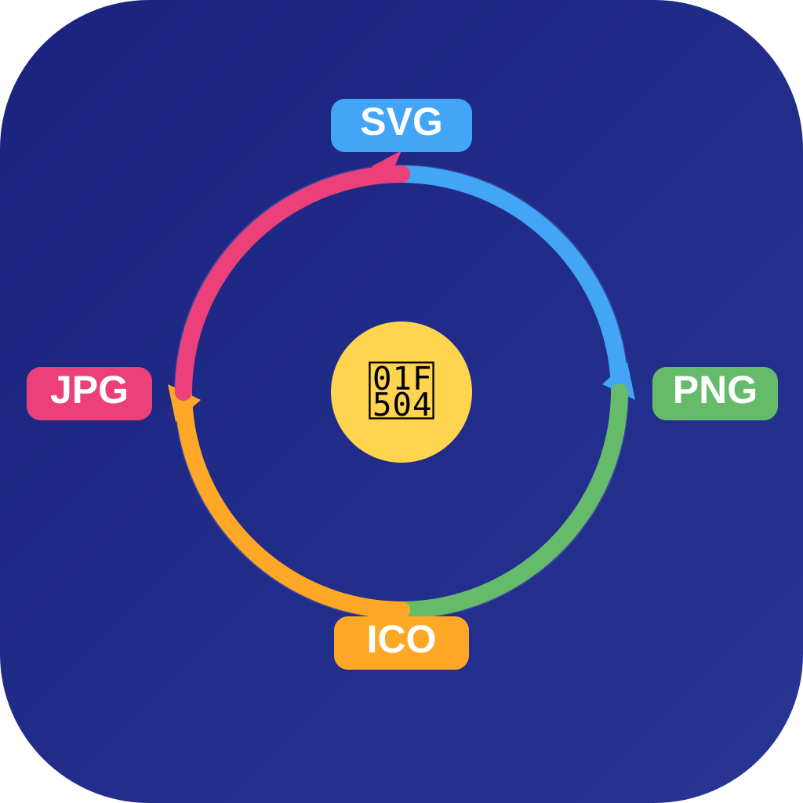
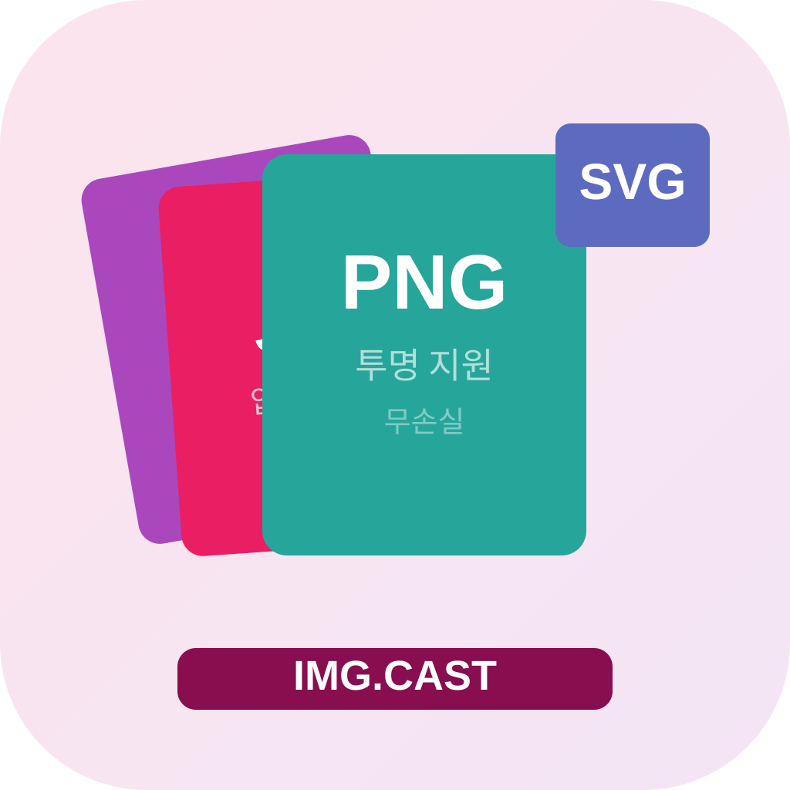
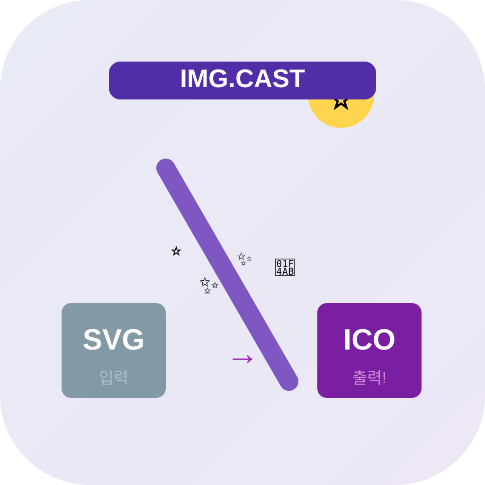

icon_04
용광로 = 포맷을 녹여 새로 주조
SVG가 용광로에서 ICO로 재탄생
타입: metaphor / 패턴: 공간/장면

icon_05
SVG·PNG·ICO·JPG 원형 순환 사이클
어떤 포맷이든 서로 변환 가능한 순환
타입: metaphor / 패턴: 대각선/동적

icon_06
WEBP/JPG/PNG/SVG 카드가 레이어드
다양한 포맷이 한 앱에 쌓인 깊이감
타입: metaphor / 패턴: 레이어드

icon_07
마법 지팡이로 SVG → ICO 변환
손 하나로 파일 포맷이 순식간에 바뀜
타입: metaphor / 패턴: 실루엣/캐릭터